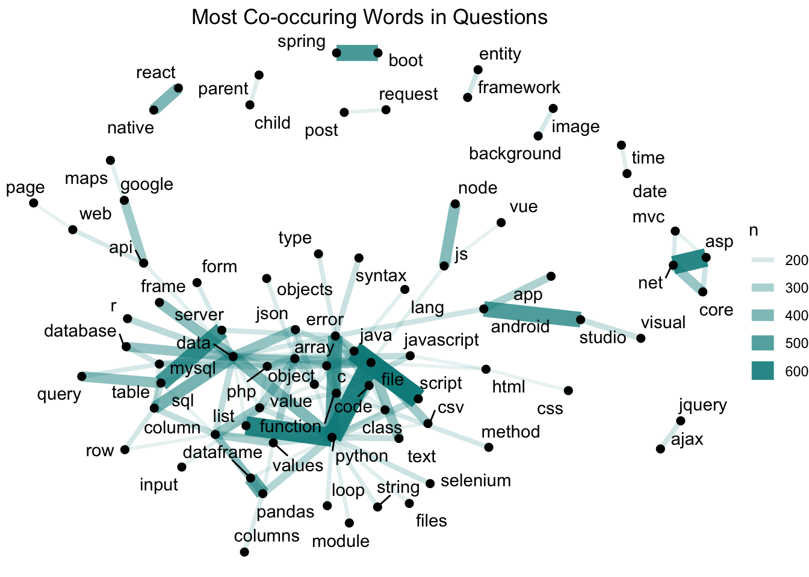
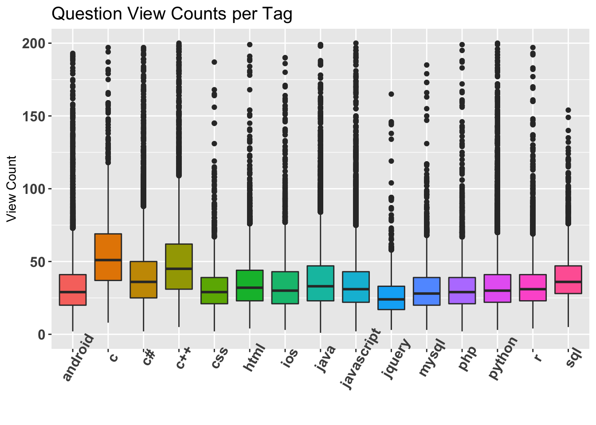
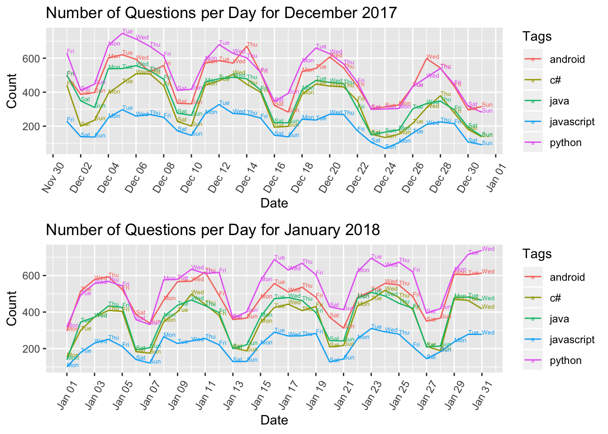
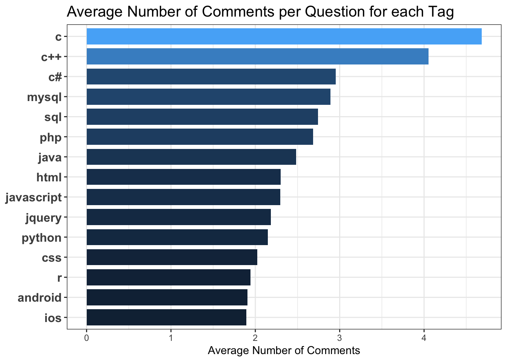
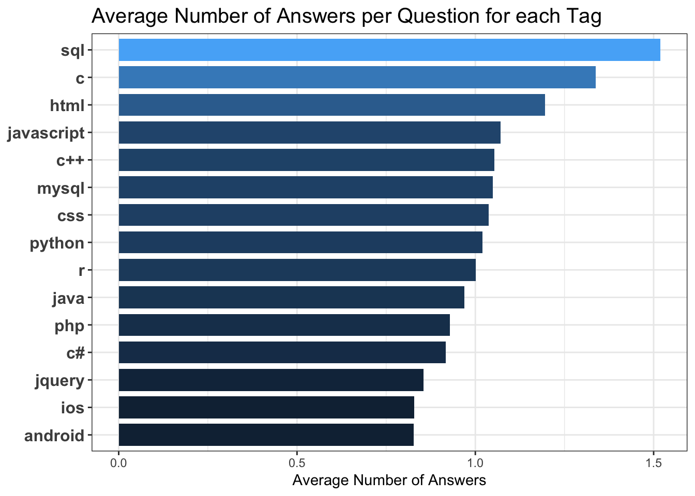

Overview
Motivation
The visibility of stackoverflow posts can be enhanced by applying relevant tags to the posts. About a third of the questions remain without accepted answers or votes. A new user who is not well versed with the platform may not be able to enjoy full benefit of the forum due to lack of fundamental information on usage. In such a scenario, tag recommendation comes as a helpful tool. This being our motivation, through this project, we have attempted to recommend 1-most appropriate tag for a post based on the textual content and the title of the post. Our tags are relevant pertaining to stack overflow, as our models learn from the past posts of stack overflow.
Research Questions
We set out to answer the following questions with our project
* In which parts of the world is Stack Overflow mostly used?
* What are the top 10 common categories?
* What is the overall sentiment of users grouped by topic?
* What are the most upvoted question tags?
* Is sentiment of answers/comments correlated with the number of upvotes or downvotes?Questions
Frequently Co-occurring Nouns in Questions
 This co-occuring terms visualization was an attempt at understanding if co-occuring words can be a factor for predicting tags. It can be seen that when we follow the highly frequent edges in the graph, we can form pseudo questions.
Wordcloud for Question Titles Overall

Boxplot of View Counts for Questions of each Tag

View counts distribution for questions from each tag. C and C++ questions tend to get viewed more often than others. This could be due to the extremely large user base of c and c++. JQuery questions get the least amount of views.
Time Series of Frequency of Questions
Here we have considered the data from 2017 to examine the progression of the number of question for a few tags over a month. 
This plot shows a pattern of the number of question dipping during the weekend while being the highest during weekdays. This pattern is commonly observed for questions of all Tags. This observation is inline with active working days patterns in most countries worldwide. Also during the end of December is observed as a holiday period and there is decrease in the number of question as compared to the month of January.
Tags :
Tag Distribution :

Distribution of the tags in our dataset
The dataset is imbalanced with python, javascript as top-2 dominant classes.
Average Score of Questions per Tag:
Score = (#upvotes - #downvotes). Figure for Average scores for a tag based on all the questions w.r.t the tag.

The score could be an indication of importance of a question or the quality of the question. An upvoted question could mean other people wanted an answer to that while a down vote could mean an already covered topic or poorly constructed question.
R and Python are amongst the top scored programming languages according to our data.
Average Comment Counts of Questions per Tag :
The average number of comments on the questions per tag.

C and C++ are the highest relative to other tags, eventhough they are not the most frequent of tags. Possible interpretation being they are harder programming languages and there are more follow up comments to obtain better understanding of the question.
Average Answer Count for Questions per Tag :
Average number of answers per question for each tag.  This distribution is indicative of Sql and C being in use for a very long time and hence have larger user base. Understandably they are leading the average answer count ditsribution.
Places the Tags are Popular in
This plot shows the cities or places the tags are popular in.

The x axis indicates the percentage of the total number of questions in that particular tag. This has been plotted only for a few tags.
Average Sentiments towards Questions of Tags based on Comments

The sentiment scores are heavily lodged around zero. This could be due to lack of a lexicon to identify sentiments pertaining to technical text or rather due to the nature of technical posts that are usually neutral and on point. May be be assigning different range of sentiments like “gratitude” for thank you and so on can help classify these sentiments better..